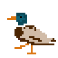

PhD dissertation
My dissertation explored the intersection of complex traits, methodological approaches in macroevolution, and the evolution of bird migration. Three key questions:

The study of avian migration presents a distinctive challenge due to the many ways a bird can be considered a "migrant," most of which are difficult to measure directly. Developing effective methods to measure and model these axes is essential for understanding the evolution of migration over long time scales.
The first part of my dissertation focuses on the efficacy of Structured Hidden Markov Models (SHMMs) in identifying threshold traits — discretized traits with underlying one-dimensional continuous variation. This allows us to test whether a discrete trait is best described as a one-dimensional threshold trait, even when only discrete data are available.